core work : website design in figma
UI/UX Design and Prototyping
Designed a part of OSME website in Figma: information architecture, user flows, wireframes, and high-fidelity prototype. Mapped the user journey from brand discovery to product purchase, balancing aesthetic ambition with functional clarity. The site needed to reflect the identity of each emerging designer while maintaining a coherent platform experience.
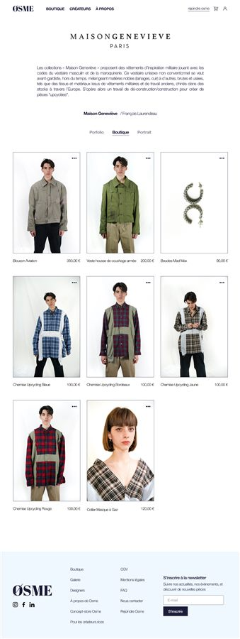
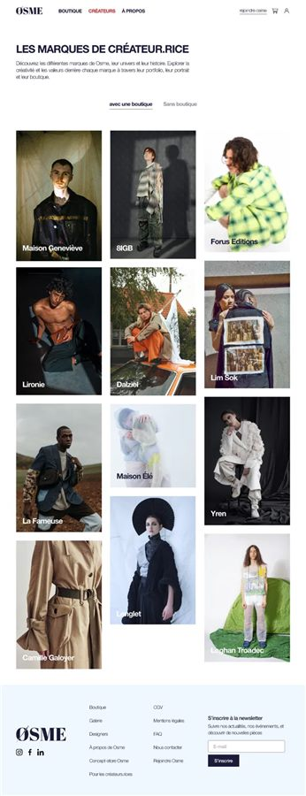
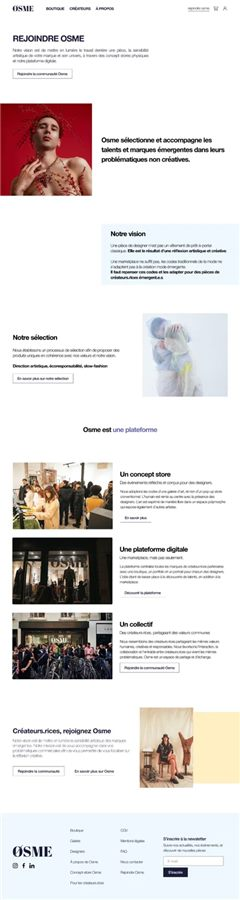
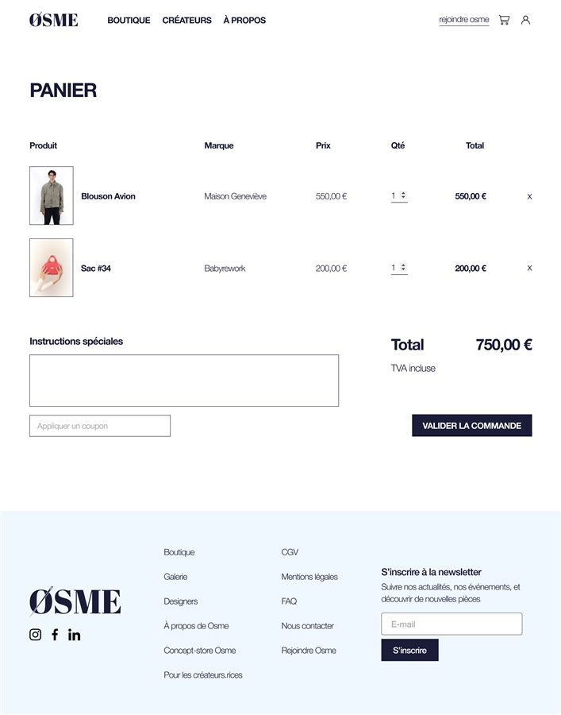
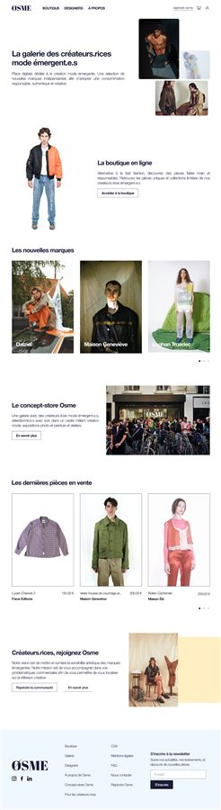
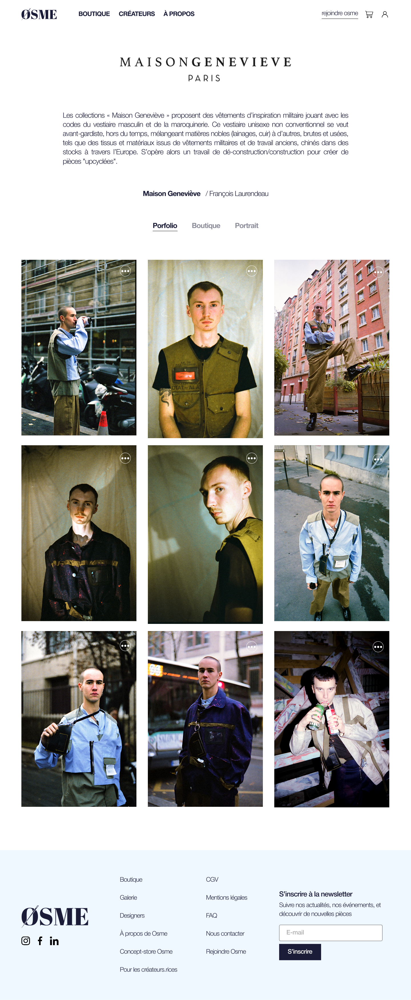
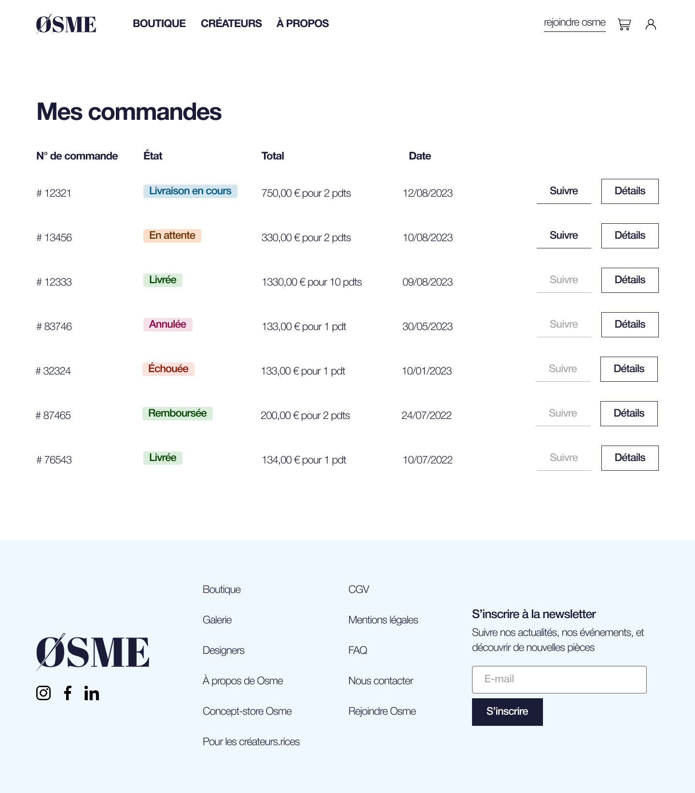
supporting work
Art Direction
Color palette, typography, poster design and visual assets coherent with the brand positioning. Print materials and in-store visual identity designed to match the digital experience.
Social Media
Video and post creation aligned with the art direction. Content built to communicate the store’s values: ethical fashion, emerging talent, creative independence.
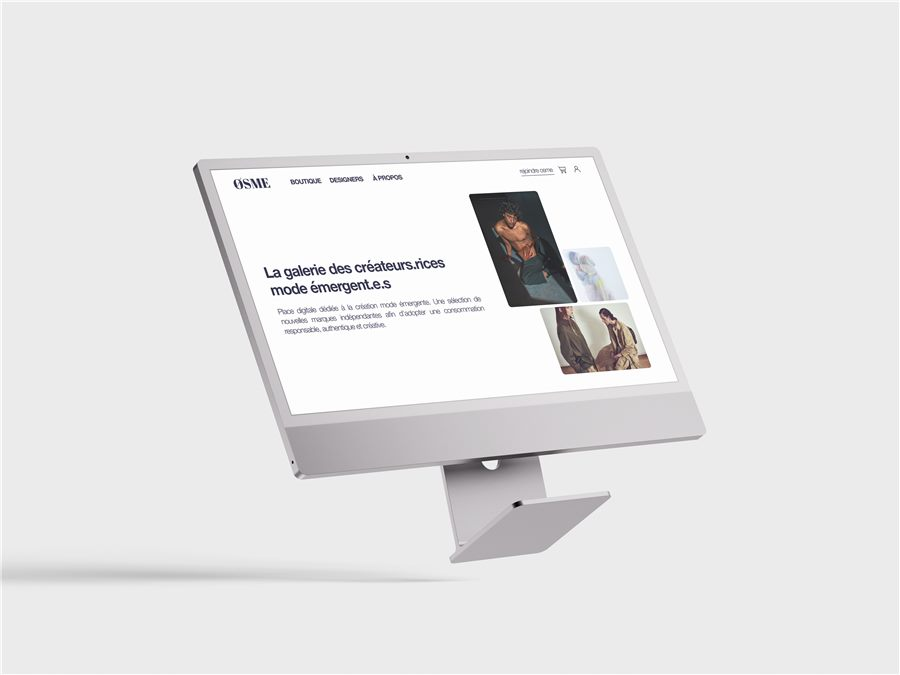
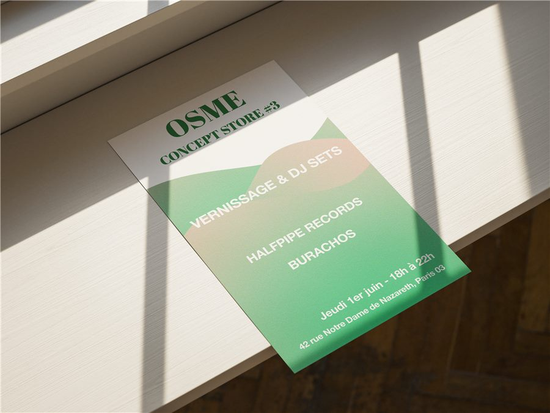
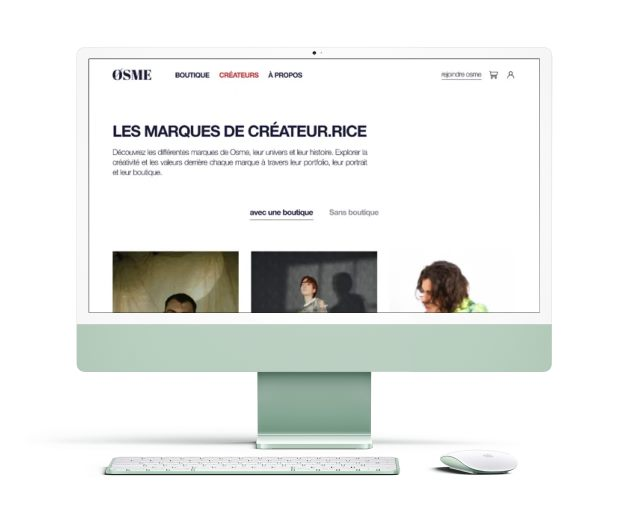
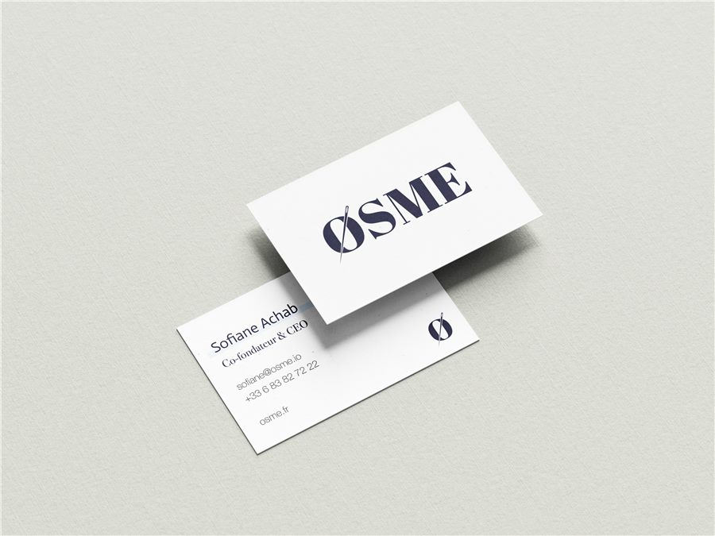
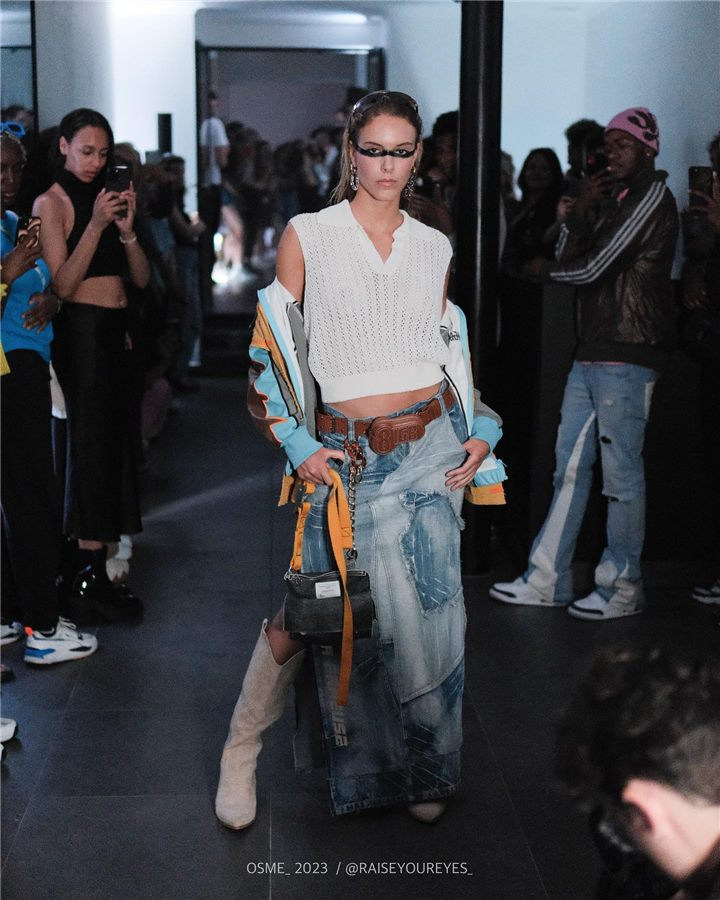
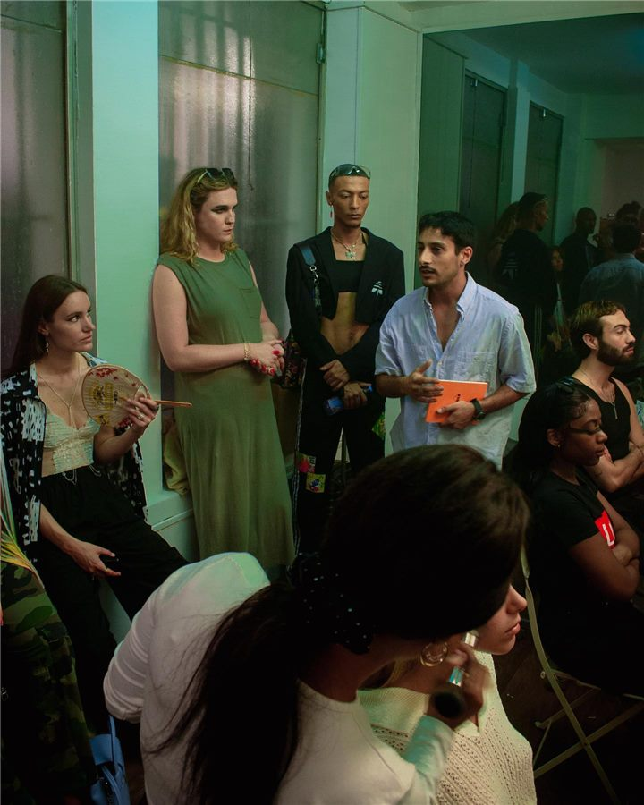